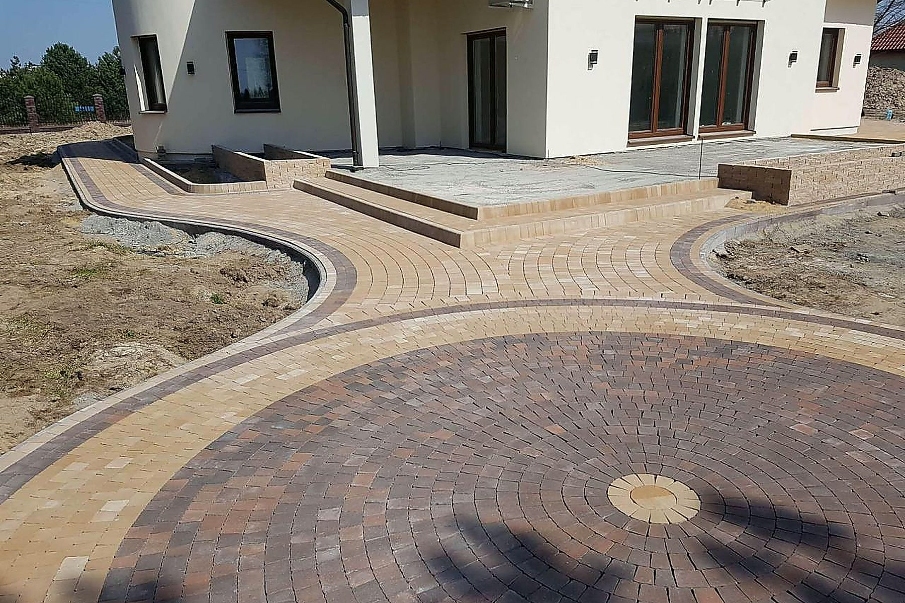
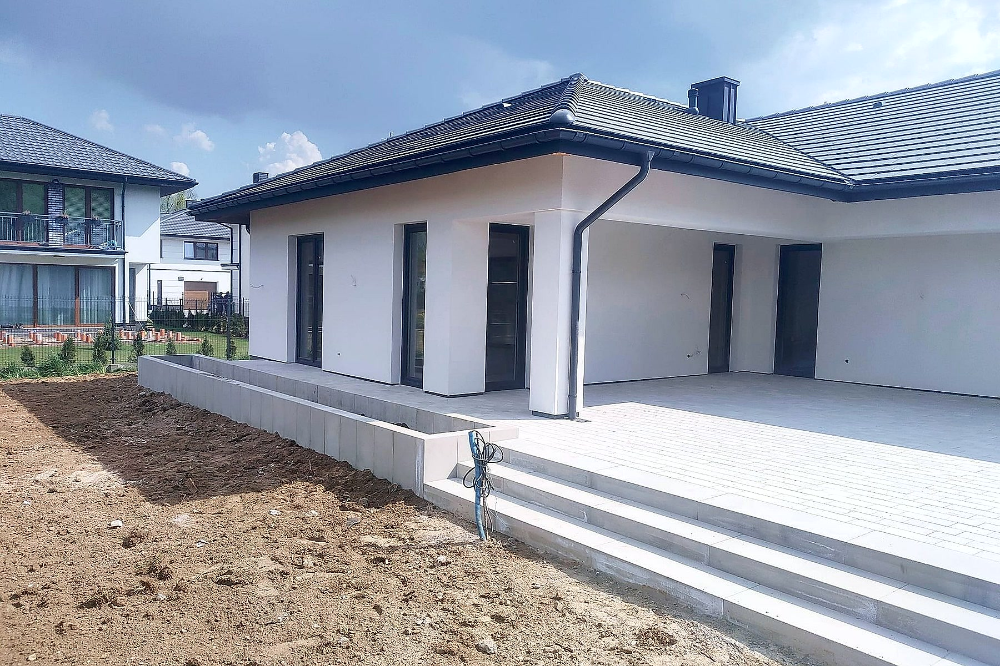
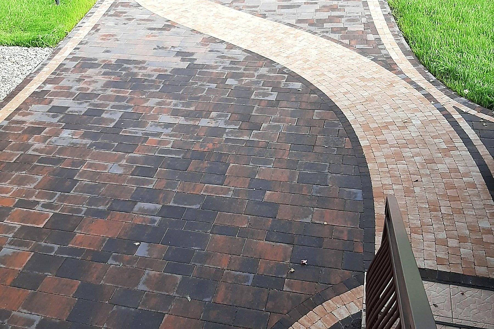
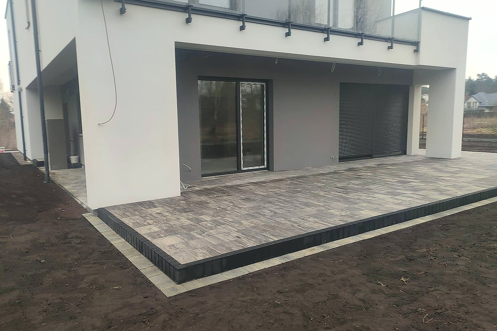
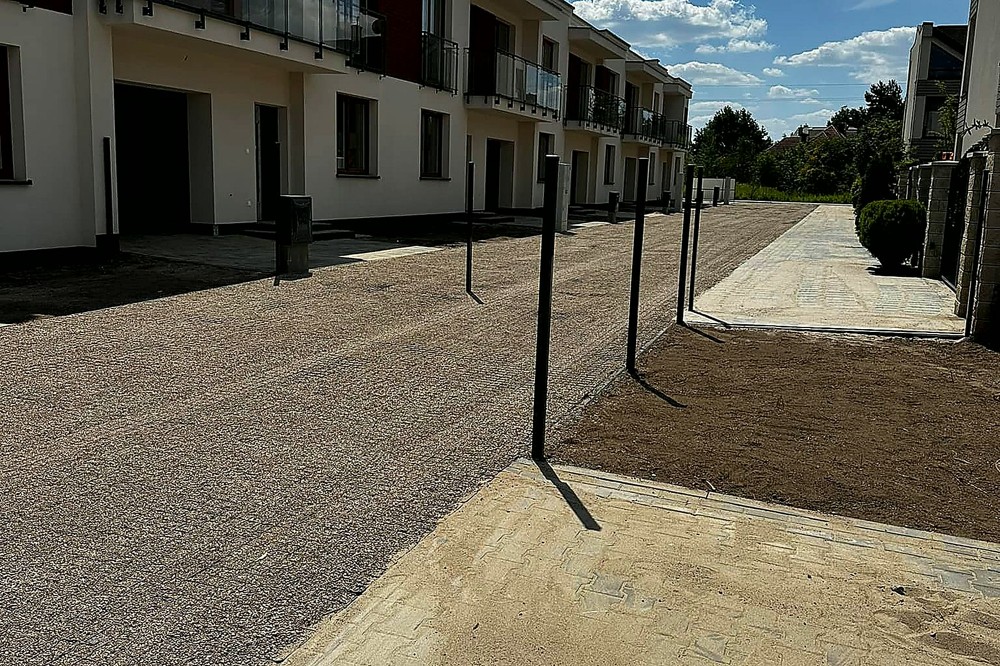

Brukarstwo · Korytnica

Kostka, taras, plac, odwodnienie. Robimy tak, żeby za pięć lat nadal było równo — bo cała robota rozstrzyga się pod ziemią, w podbudowie.

Najczęstsza skarga na brukarzy nie dotyczy kostki, tylko tego, że w połowie roboty cena rośnie, a ekipa znika na inną budowę. U nas jest odwrotnie: przyjeżdżamy, mierzymy, podajemy kwotę za całość — i ta kwota się nie zmienia.

Dla domów prywatnych i dla firm. Każda pozycja wyceniana po oględzinach terenu — za przyjazd nie płacisz.
Podjazd codziennie trzyma auto, więc najwięcej pracy idzie w spód: koryto na właściwą głębokość, kruszywo zagęszczane warstwa po warstwie, podsypka i dopiero kostka.
Zobacz 02Kostka, płyty tarasowe, kamień czy granit — każdy materiał inaczej znosi słońce, mróz i mech. Doradzamy, co się sprawdzi u Ciebie, zanim kupisz.
Zobacz 03Plac manewrowy i parking firmowy to inna robota niż ścieżka — auta dostawcze wymagają głębszego koryta i mocniejszego zagęszczenia.
Zobacz 04Kałuża pod bramą i mokra ściana garażu to znak, że woda nie ma dokąd spływać. Spadki i drenaż planujemy razem z nawierzchnią, nie po fakcie.
Zobacz 05Plamy oleju, ślady opon, mech, glony i graffiti schodzą wysokim ciśnieniem. Stara kostka wraca do koloru za ułamek ceny nowej nawierzchni.
Zobacz 06Ściany, budynki gospodarcze, posadzki i stare betony. Wywóz gruzu i uprzątnięcie terenu wliczone w robotę.
Zobacz
Telefon albo zdjęcia terenu. Po krótkiej rozmowie wiesz, czy to robota dla nas i kiedy możemy być na pomiarze.
Wycena jest z pomiaru, nie z telefonu. Po oględzinach wiesz, ile płacisz, co wchodzi w cenę i kiedy wchodzimy na teren.
Wchodzimy w umówionym terminie i robimy swoje do końca — nie znikamy w połowie na inną budowę.
Przechodzimy razem po całej nawierzchni. Coś Ci nie gra — poprawiamy, zanim rozliczymy robotę.
Każda z tych nawierzchni ma właściciela, który po niej codziennie jeździ albo chodzi. Bez dobierania kadrów i podkręcania kolorów.

Taras Ścieżka wokół domu
Ścieżka wokół domu Plac
Plac Dojazd do posesji
Dojazd do posesji
Obrzeża i palisadyPłyty ażurowe Parking
Parking Podjazd
Podjazd Nawierzchnia
Nawierzchnia Kostka przy budynku
Kostka przy budynku Przed robotą
Przed robotą Nawierzchnia z kostki
Nawierzchnia z kostki„Właściciel firmy bardzo pomocny — nawet już po skończeniu i rozliczeniu całej inwestycji. Dalej można do Niego dzwonić i służy pomocą, bardzo dobry kontakt. Na wszystko firma udziela 5 lat gwarancji.”
„Droga wewnętrzna oraz nawierzchnia z kostki brukowej zostały wykonane solidnie, estetycznie i zgodnie z ustaleniami. Prace przebiegły sprawnie i terminowo. Bardzo dobry kontakt, uczciwa cena i świetny efekt końcowy.”
„Profesjonalna ekipa pracowitych i zorganizowanych ludzi. Można śmiało polecać, a ja rzadko kogoś polecam. Wiedzą co robią i są staranni.”
Baza w Jaczewie pod Korytnicą, robimy w promieniu około 70 km — od powiatu węgrowskiego po Warszawę. Dalej? Zadzwoń, przy większej robocie zwykle da się dograć.
Nie ma pytania na liście? Zadzwoń — odpowiadamy od ręki, bez formularzy i oddzwaniania za trzy dni.
Zależy od terenu i materiału — inna cena wychodzi na piasku, inna tam, gdzie trzeba głębiej korytować i wywozić ziemię. Dlatego cenę podajemy dopiero po pomiarze — i w trakcie roboty ona już nie rośnie.
Nie. Za przyjazd i pomiar w Korytnicy i okolicy nie płacisz. Decyzję podejmujesz po poznaniu ceny, nie przed.
Oba układy są w porządku. Z materiałem od nas masz jedną cenę i jednego odpowiedzialnego za całość; z powierzonym — najpierw go obejrzymy, bo nie każda kostka nadaje się pod auto.
Ścieżka to kilka dni, duży podjazd z korytowaniem — dłużej. Przy wycenie dostajesz termin wejścia i termin odbioru; między nimi robota idzie ciągiem, bez tygodniowych przerw.
Wywóz jest w wycenie — po robocie nie zostaje hałda ziemi ani sterta starego betonu. Chcesz zatrzymać ziemię na podniesienie ogrodu? Powiedz przy pomiarze, zostawimy ją tam, gdzie wskażesz.
Bardzo często tak. Mycie wysokociśnieniowe ściąga mech, glony i plamy oleju — kostka wraca do koloru. Przy pomiarze mówimy wprost, czy w Twoim przypadku wystarczy mycie, czy trzeba przekładać.
Dobrze zagęszczona podbudowa nie siada — ale jak coś się ruszy, wracamy i poprawiamy. Nasza wina — robimy za darmo; wjechało tam coś dużo cięższego, niż ustalaliśmy — mówimy wprost, co i za ile.
Przyjeżdżamy, mierzymy i podajemy konkretną kwotę za całość. Za darmo i bez zobowiązań. Decyzję podejmujesz po poznaniu ceny, nie przed.